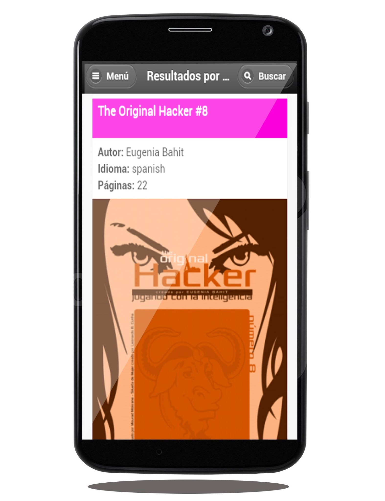

Open Searcher

Open Searcher es un proyecto que inicié para darle uso a la API de Open Libra un proyecto donde se publican libros digitales libres.
La aplicación está disponible para Android.

Open Searcher es un proyecto que inicié para darle uso a la API de Open Libra un proyecto donde se publican libros digitales libres.
La aplicación está disponible para Android.